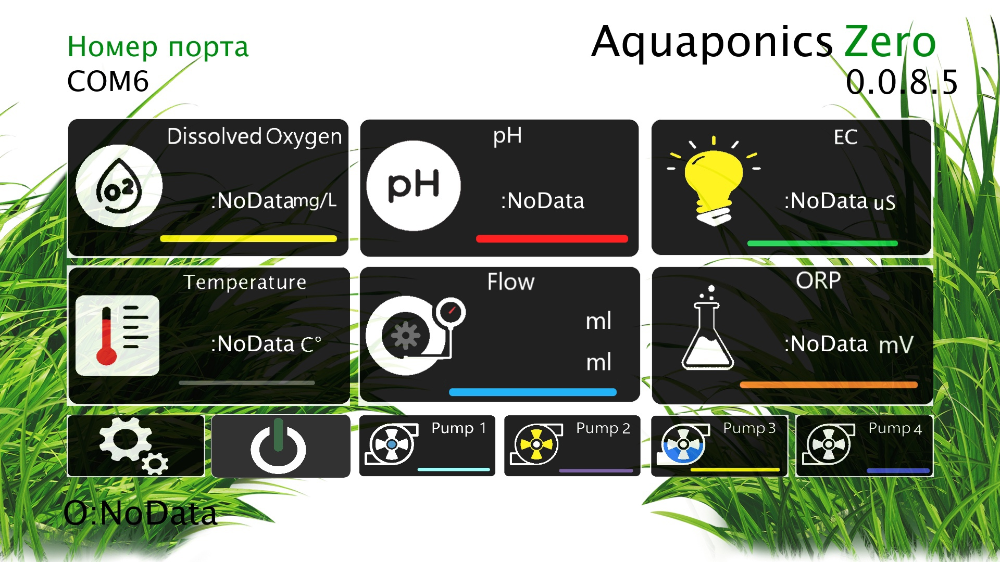
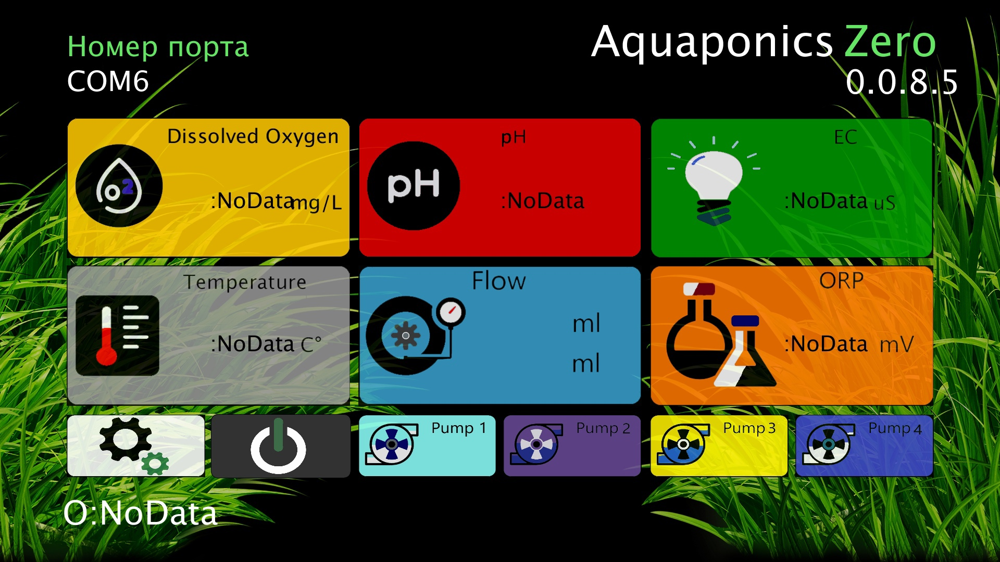

Light and Dark versions
 Описание:Программное обеспечение для управления устройствами на базе микроконтроллеров ATmega. В состав программного обемпечения входят: кроссплатформенное приложение визуального вывода информации с датчиков (расстворённый кислород, состояние PH среды, проводимости воды в резервуаре для рыб, температура, скорость потока воды в помпах, окислительно-восстановительный потенциал) и управления, прошивка управляющего микроконтроллера. Данное программное обеспечение подготовлено для проекта устройства, реализующего искусственную экосистему, в которой ключевыми являются три типа живых организмов: водные животные (обычно рыбы), растения и бактерии. Такая технология экологически безопасна. Работает по принципу экосистемы рыб и растений: рыбы обеспечивают питание растениям, а растения очищают воду.